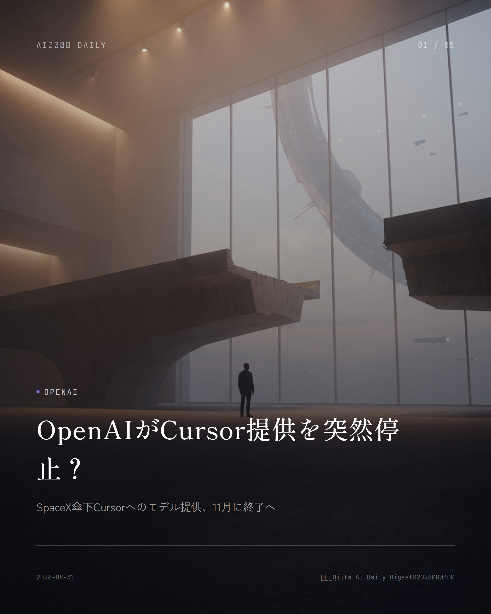
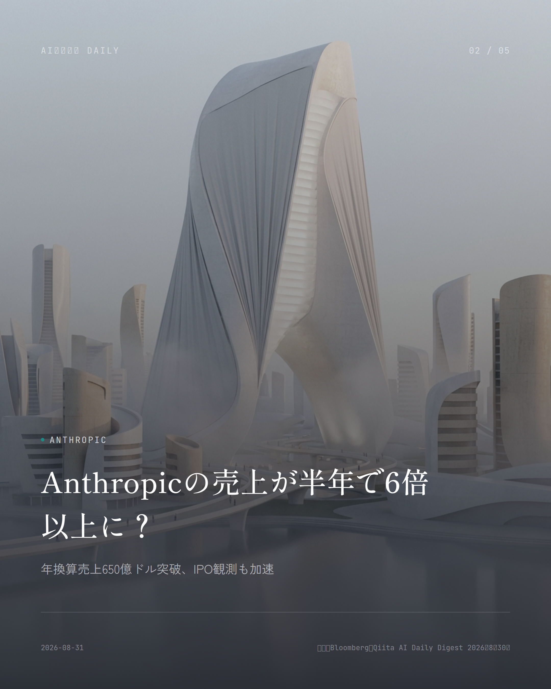

本サイトはアフィリエイトプログラムによる収益を得ている場合があります。
本サイトはGoogle AdSense等の広告配信サービスを利用しています。

OpenAI
OpenAIがCursor提供を突然停止？
SpaceX傘下Cursorへのモデル提供、11月に終了へ
OpenAIが8月28日、SpaceXの完全子会社になった開発ツール「Cursor」（運営元Anysphere）へのモデル提供を、2026年11月12日で打ち切ると通知した。
表向きの理由は技術的な話じゃなく「信頼」らしい。過去のTwitter買収やxAIでの規約違反を引き合いに出し、SpaceXが規約の範囲内でちゃんと技術を使ってくれるか確信が持てない、という説明だ。
次期フロンティア推論モデル「Astra」を巡る説明責任も理由に挙がっていて、AI企業同士の主導権争いがいよいよ表面化してきた形になる。
なぜ重要か
AI企業同士の提携解消は、開発者が毎日頼っているツールの土台がある日突然崩れかねないリスクを浮き彫りにする。Cursorを仕事で使っている開発者は、そろそろ代替策を考え始めた方がよさそうだ。
出典：Qiita AI Daily Digest、2026年8月30日

Anthropic
Anthropicの売上が半年で6倍以上に？
年換算売上650億ドル突破、IPO観測も加速
Anthropicの年換算売上（ARR）が7月末時点で650億ドルを突破した、とBloombergが報じ、TechCrunchやAxiosも追認した。5月時点の約470億ドル、2025年末の約90億ドルからの伸びを見ると、勢いが尋常じゃない。
2026年4〜6月期の売上は115億ドルを超え、前年同期比で約14.6倍。調整後営業利益も初めて黒字に転じたそうだ。
同社は6月にSECへ非公開のS-1を提出済みとされ、10月の上場・評価額約2兆ドルという観測も飛び交っているが、Financial Timesはこの数字はまだ正式に確定していないと釘を刺している。
なぜ重要か
生成AI大手の急成長は市場全体の勢いを映す指標で、実際に上場すれば個人投資家の資産運用にも波及しかねない話だ。
出典：Bloomberg、Qiita AI Daily Digest 2026年8月30日
Google
まさか大学生ならAIが1年無料に？
Gemini Drops8月版、学生向け新機能が続々
Googleが8月28日、Gemini関連の最新機能をまとめた月次アップデート「Gemini Drops」8月版を公開した。目玉は学生向けの「Student Hub」新設と、対象学生への「Google AI Pro」（日本では「Google AI Plus」）1年間無料プランだ。
授業ノートや資料をAIがまとめて復習に使える「Study Notebooks」も新登場。加えて軽量・高速な新モデル「Gemini 3.7 Flash」、音声で指示するだけで複数アプリをまたいだ作業をこなす「Gemini Live」の機能拡張も同時に発表された。
なぜ重要か
教育現場でのAI活用がいよいよ本格化していて、学生は家計の負担を抑えつつ高性能なAIツールを学習に使えるようになる。子どもの教育費を気にする保護者にとっても、無視できない動きだ。
出典：Google公式ブログ、2026年8月28日
Anthropic
ブラウザの中でClaudeが勝手に動く？
有料プラン向けに一般提供開始、自動操作も可能に
Anthropicは8月26日、ブラウザ拡張機能「Claude in Chrome」の一般提供を始めた。有料プランのユーザーなら誰でもChromeウェブストアからインストールできる。
これでClaudeは、いちいち手動で承認しなくてもブラウザの中でテキストの読み書きやリンク操作、ページ移動、フォーム入力を自律的にこなせるようになった。社内ダッシュボードやベンダーポータルなど、既存のログイン情報を使ったアクセスも可能だ。
ただしローカルファイルや他アプリとの連携にはまだデスクトップアプリが必要で、他のChromiumブラウザやモバイル環境には対応していない。
なぜ重要か
毎日ブラウザでこなす定型作業をAIに任せられるようになり、仕事の効率が大きく変わりそうだ。とはいえ自律操作には情報漏えいなどのリスクも付きまとうので、使い方には気をつけたい。
出典：AI Watch (Impress Watch)、2026年8月27日
OpenAI
ChatGPTが勝手に仕事を進める？
Webhook対応タスクや複数アカウント連携が追加
OpenAIがChatGPT Workに、GmailやSlack、GitHubの更新をきっかけに自動でタスクを実行する「Webhookトリガー型の予約タスク」を追加した。
複数のGoogleアカウントを1つの会話でまとめて扱えるようになり、仕事用とプライベート用のGmail・カレンダー・連絡先をまたいだ予定確認やメール検索ができるようになった。
サインイン済みのウェブサイト上でタスクを完了できるブラウザ機能も拡張され、パスワードマネージャー連携や重要操作前の確認機能も新たに備わっている。
なぜ重要か
メール対応やスケジュール調整といった日常業務の「待ち時間」がAIによって削られていく、働き方の効率化がまた一歩進んだ格好だ。
出典：OpenAI公式リリースノート、2026年8月28日
Anthropic
Claude Codeの上限、増える？減る？
9月14日から恒久25%増でも実質17%減の謎
Anthropicが8月30日、コーディング支援ツール「Claude Code」の標準週次利用上限を9月14日から恒久的に25%引き上げると発表した。
ただ、5月から続いていた期間限定の50%増が同じタイミングで終わるため、現在使っている人からすると9月14日以降の利用可能枠はむしろ実質17%少なくなる。Anthropicも続く投稿でこの減少をあっさり認めている。
「増加」と「減少」が同時に成り立つのは、比較の基準（分母）が違うから、という話らしい。分かりやすいとは言い難い変更だ。
なぜ重要か
仕事でClaude Codeを使っている開発者にとっては、来月から実際に使える作業量が減る可能性がある。料金プランやツールの使い方を見直す、いいきっかけになりそうだ。
出典：XenoSpectrum、2026年8月30日
Anthropic
AIがロボットを直接操る時代へ？
Anthropic、実験・製造機器向け新規格を発表
Anthropicが8月27日、AIエージェントが実験装置や製造機器を安全に操作するための共通規格「Model Hardware Standard（MHS）」の研究プレビューを始めた。
AIがソフトウェアの枠を飛び出して物理的な機器を直接動かす際の安全性や互換性を担保する枠組みで、産業用ロボットや研究機器への応用が今後見込まれている。
なぜ重要か
AIがデジタルの世界を超えて実世界の機器を動かし始めている、その本格的な一歩と言っていい動き。製造業や研究分野の自動化にじわじわ影響が出てくるかもしれない。
出典：Qiita プログラミング雑記、2026年8月31日